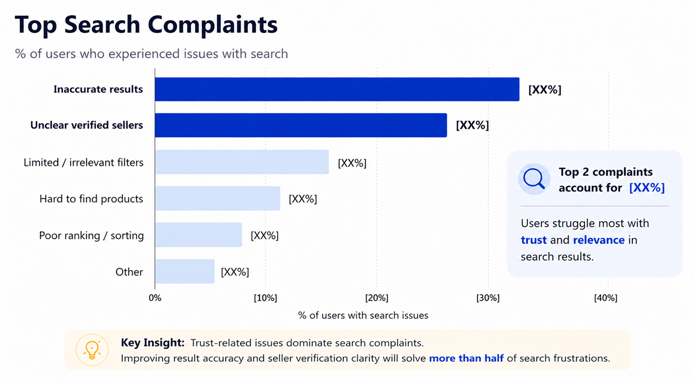
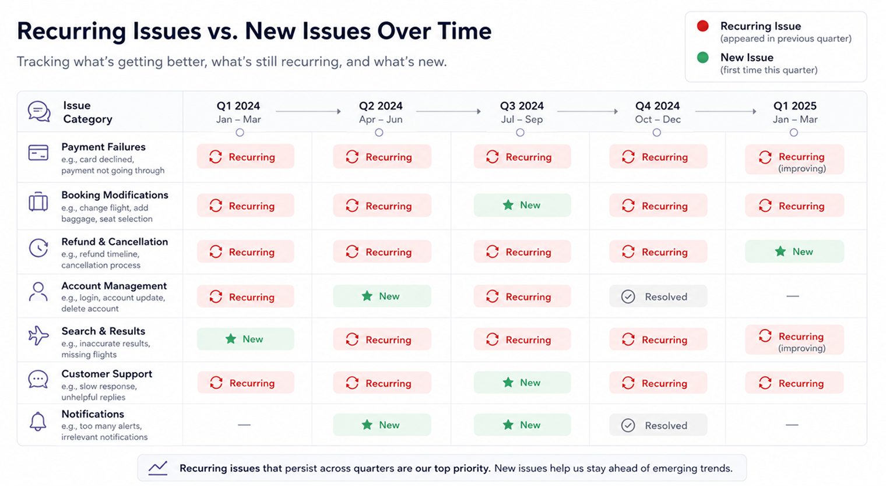

Building a System That Turned 9,000 User Voices into Product Decisions
Some details have been intentionally generalized or omitted due to confidentiality.
Opening context
Blibli collected thousands of customer feedback responses every quarter.
But the analysis was manual.
Researchers spent weeks reading comments in Excel before product teams could use the findings.
The system could not keep up with the scale.
The research question
How do we turn thousands of scattered complaints into something product teams can actually use fast enough to influence decisions?
How I approached it
What I found
Finding 01
The old survey measured satisfaction, but not specific problems
The existing usability score could show when satisfaction dropped.
But it could not explain why.
The new system measured problems by journey: search, checkout, payment, shipping, and account management.
- Overall satisfaction score only
- Generic, untagged comments
- Hard to act on
- Journey-level tracking
- Specific, classified pain points
- Actionable by squads
Old vs. new system comparison — replaces the before/after description above
Finding 02
Search complaints were really trust complaints
Users were not mainly frustrated by speed or layout.
They were frustrated because search results felt unreliable and seller verification was unclear.
The issue was trust, not usability.

Finding 03
The same problems kept repeating every quarter
The dashboard revealed that many top complaints kept returning quarter after quarter.
The company did not lack feedback. It lacked visibility and ownership.

What changed
Research stopped being a quarterly report. It became an operational system.
- Manual Excel analysis
- Static decks
- No ownership of follow-through
- Automated classification
- Self-serve dashboard
- Jira-tracked action items
Before vs. after operational comparison — replaces process description above
Research findings were turned into Jira-tracked action items through cross-functional workshops, creating a direct line from user complaint to product decision.
Reflection
If I ran this again, I would build stronger accountability tracking into the workflow from the start.
The system solved visibility. The next version should also solve follow-through.